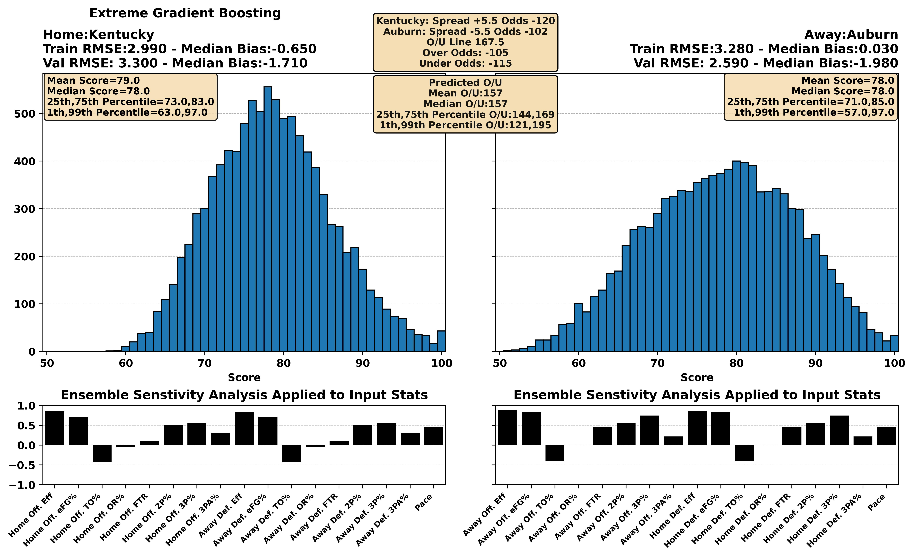
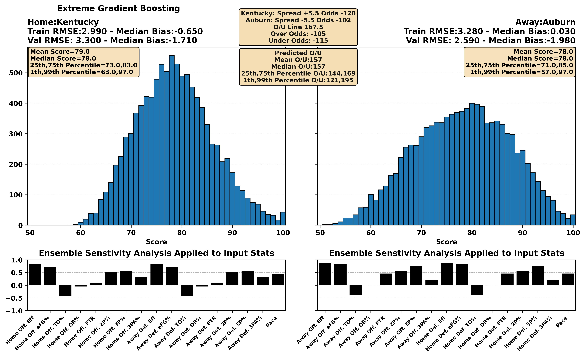
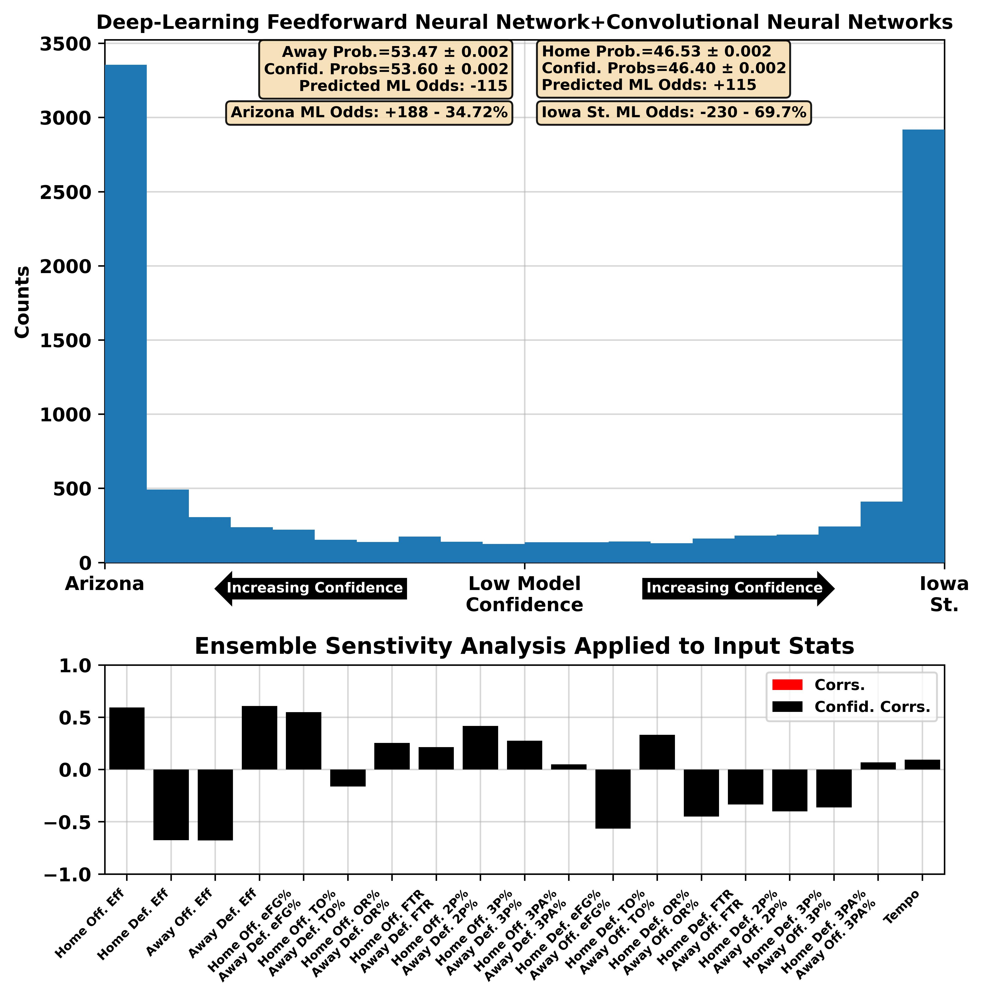
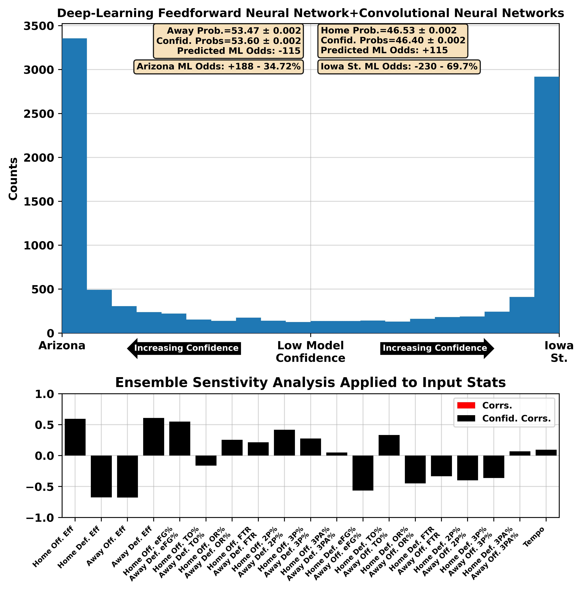
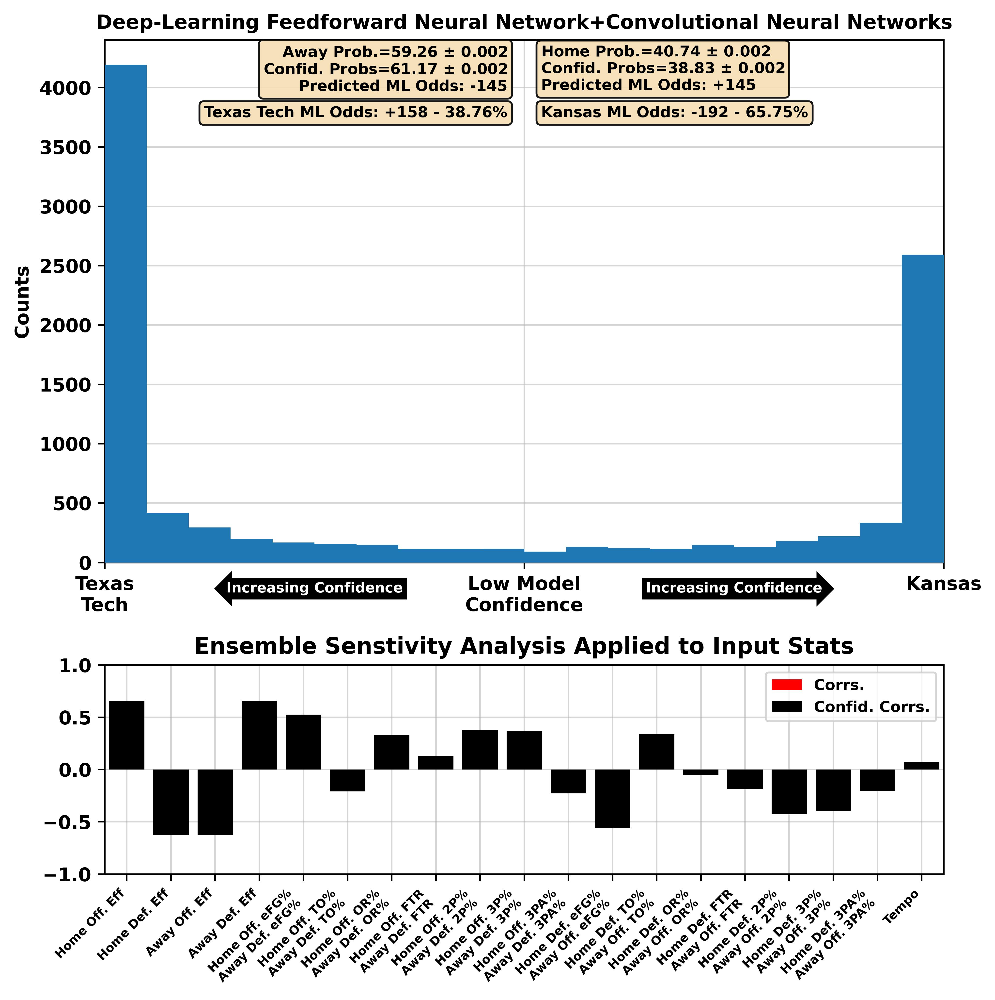
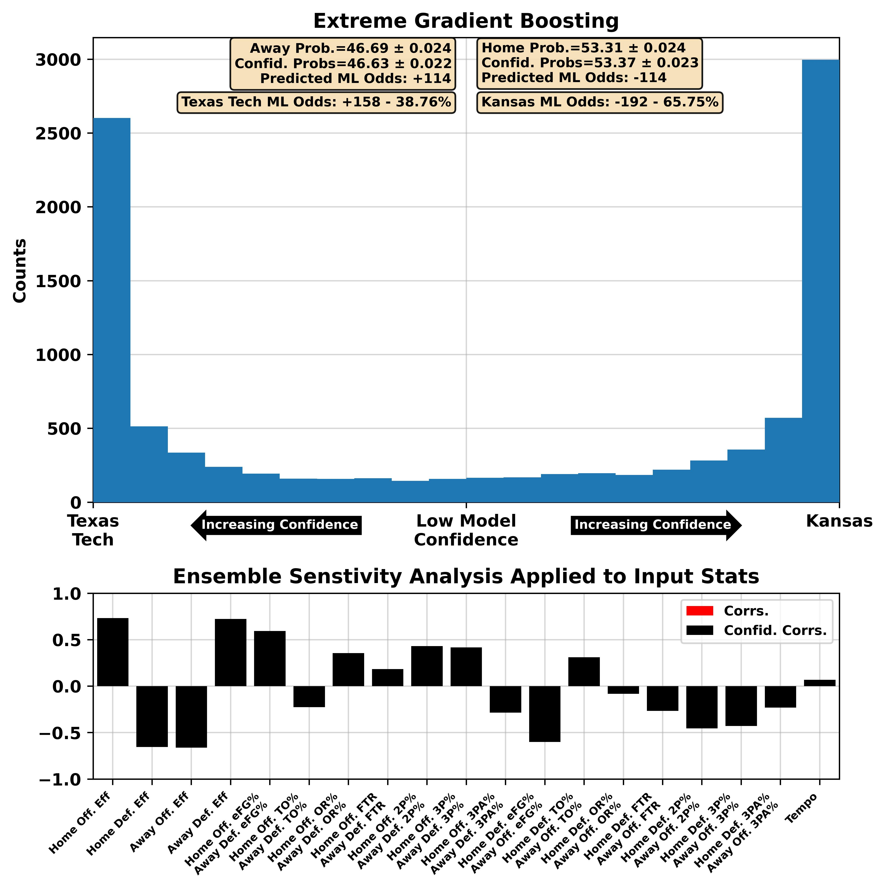
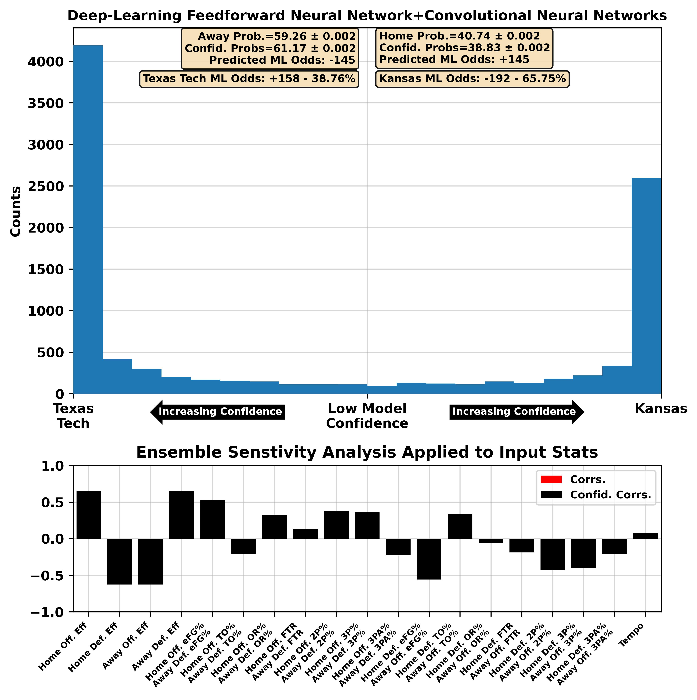
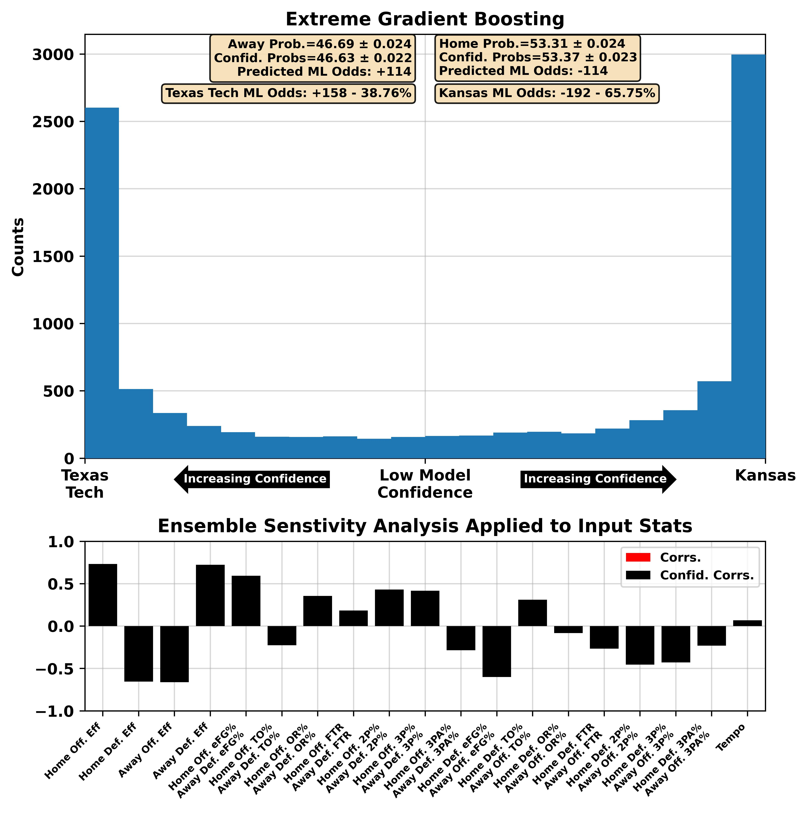
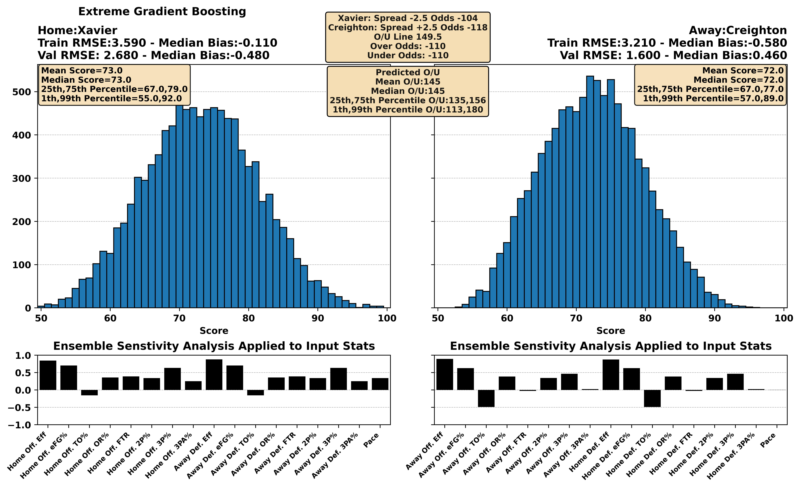
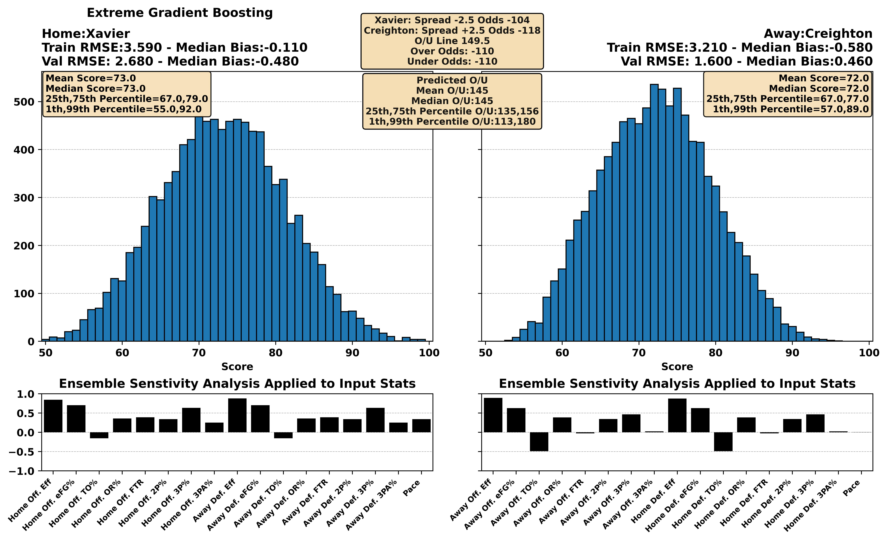

| BART Torvik Prediction | 08:00 PM 6 Alabama at 24 Mississippi St. SEC Network | Alabama -0.9, 84-83 (53%) |
 

| BART Torvik Prediction | 06:00 PM 14 Wisconsin at 16 Maryland BTN | Maryland -3.8, 80-76 (64%) |


| BART Torvik Prediction | 08:00 PM 27 Saint Mary's at 54 Santa Clara ESPNU | Saint Mary's -0.7, 70-69 (53%) |
 



| BART Torvik Prediction | 08:00 PM 32 Texas at 26 Mississippi ESPN2 | Mississippi -5.3, 72-67 (71%) |
 





| BART Torvik Prediction | 06:00 PM 1 Houston at 34 West Virginia ESPN+ | Houston -8.8, 62-53 (85%) |


| BART Torvik Prediction | 06:00 PM 2 Auburn at 73 LSU SEC Network | Auburn -14.6, 82-68 (90%) |


 

| BART Torvik Prediction | 08:00 PM 85 Rutgers at 58 Northwestern BTN | Northwestern -6.6, 74-68 (74%) |


| BART Torvik Prediction | 06:00 PM 71 TCU at 13 Texas Tech ESPN2 | Texas Tech -12.3, 73-61 (89%) |


| BART Torvik Prediction | 07:00 PM 115 Oklahoma St. at 88 Kansas St. CBSSN | Kansas St. -7.5, 77-69 (76%) |